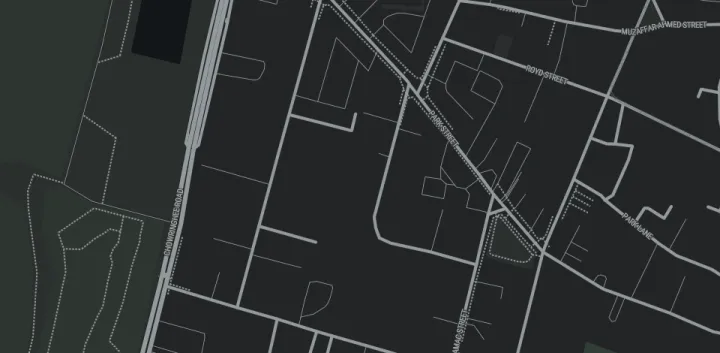

A / STATIONARY
Still means still.
When you stop, the camera settles. Heading noise is filtered, and ending a route no longer leaves the map jittering as you move the phone.
VERSION 2.6.5 / RELEASE NOTES
A calmer camera through every turn. Offline place names when the signal disappears. More room for the road, the route and the worlds around them.
02 / EXPLORATION
Download a region with its open-place records. Search those names on-device later, even when you are outside the saved area or out of coverage.

Nearby discovery and name search can read the open-data snapshot stored with a downloaded area. Removing that area removes its place snapshot too.
Optional online layer: Google Maps web suggestions, listing details and photos can be enabled separately. These experimental, undocumented endpoints are not part of offline packs and are not the supported Google Places API. They have no Places API key or API SKU billing, may change or stop working, and are subject to Google's terms.
03 / CARTOGRAPHY
Map artwork remains its own language. The real roads and the route stay easy to read underneath it.
3D buildings, roads, route paint and street labels now use a clearer layer order. Zooming out across the map worlds also keeps more of the geography in view.
04 / SHARED DISPLAY
Direction, tilt and zoom now hold a useful view while stationary and while moving. When another app shares the display, the map and guidance reflow into the space Android Auto gives them.
Android Auto setup and limitations05 / UPDATE EXPERIENCE
The updater keeps its loading and download bar anchored while the longer release details scroll below. The action remains clear on smaller screens.
06 / RELEASE ROUTE
The Actions graph branches across map, Android and release checks, then rejoins before signing and provenance. Every stop runs a real validator, build or test.
07 / COMMUNITY ROUTE REPORTS
These reports helped us find the rough edges that made this release better. Thank you for taking the time to show what needed fixing.
@ForgotMyИame_124Liberty City landmarks and blips · ticket-0002@AleksandyrCompass behavior · ticket-0003@shaurya124Android Auto split-screen sizing · ticket-0003@NomadMap rotation through turns and slowdowns · ticket-0004Discord ticket channels are private; reporter names are credited without exposing private links.